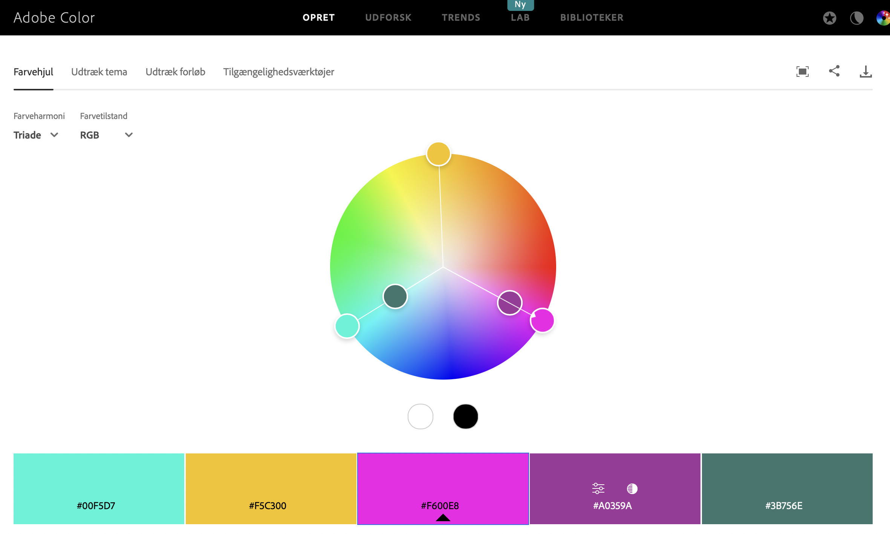

Som man kan se på billedet har vi brugt farvehjulet til at få indpiration til gode farver. 
Jeg har bruget nogle af faverne fra triade modellen fordi for at man kan se forskel på de forskellige ting på min hjemmeside.